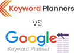

Everything on the web – whether it is finding a video on YouTube or locating a news article – begins with a search. And all these searches are carried out with the help of KEYWORDS.
“According to statistics, Google receives more than 63,000 searches per second daily. It means there are at least 3.8 million searches per minute, and 2 trillion searches per year, and 5.6 billion searches per day!”
These striking figures precisely describe the role of searches and keywords in your online life. This description defines how significantly important a Keyword Tool is.
Every Google search expresses a person’s needs, wants, interests and desires. Imagine if you can get a hold of your target market’s searches, you can customize your business domain and content according to their expressions and end up serving the ‘actual needs’ of your potential customers. But how can you find the search terms of your customers? The answer is Keyword Tool!
A Keyword tool helps you analyze people’s searches, so you can use the favorable elements to flourish your own website. The analysis can help you identify the most relevant search terms for your domain. These search terms can help you create optimal content so you can reach your target audience, get them to visit your website, read your content, and eventually BUY your products and services.
If you wish to see your online business thrive, Keyword Planners tool may be your best bet. Out of all the Keyword Tool alternatives available on the internet, Keyword Planners makes the best choice for two main reasons: it’s SIMPLE and FREE!
You don’t need a guidebook or prior experience with keyword density checker to use Keyword Planners, as its usage process is extremely simple. Moreover, Keyword Planners brings you all the following services free of any hidden costs:
Get started with the fast and efficient Keyword Planners tool today to bring potential visitors to your website and gauge reactions. Save time and money with this Keyword Rank Checker and ensure that your website never runs low on views or engagements.
With Keyword Planners tool by your side, you can find out what your target audiences are searching for on Google and direct the right traffic to your website. Simply put, Keyword Planners helps you optimize your website content according to the subjects your target audience wants to read.
Unlike other competitor keyword websites available on the internet, Keyword Planners is far more reliable and effective. With the benefits and services that this Keyword Rank Checker offers, you will always find yourself one step ahead of your competitor.
Keyword Planners brings you the following benefits:
Keyword Planners brings you the following services:
Keyword Planners is one of the few tools on the web that brings you relevant keywords in the best manner for free. It is an excellent source of information to find keywords that people type in the Google search box.
Unlike other keyword tools on the market, Keyword Planners employs Google Autocomplete to source and generate keywords for you. Google Autocomplete is a tool created by Google to make people’s search experience easier and faster. The Autocomplete suggestions are what Google shows when you start typing into the Google search box. These suggested keywords help the search engine giant retrieve the most relevant websites to brings users the most relevant content for their search query. Google says:
“Autocomplete predictions are automatically generated by an algorithm without any human involvement based on several objective factors, including how often past users have searched for a term.”
Therefore, it is safe to say that Google shows the most relevant keywords in the autocomplete suggestions. Keyword Planners tool brings you these keywords for free, so you can create the most appropriate content for your website accordingly, to rank at the top of your target audience’s search query.
UberSuggest might have earned a name as the best SEO tool to win more traffic, but it still stands at a disadvantage compared with Keyword Planners. While the former helps you use SEO in the best possible way, the latter helps with SEO and assists you with many other powerful marketing functions such as PPC and content creation. Indeed, Keyword Planners is more effective than UberSuggest as it brings you a variety of exceptional services.

Like Keyword Planners, Google Keyword Planners also helps you locate relevant keywords that people type in the search Google trends box. However, Google Keyword Planners’s services are subject to many limitations:
Considering all these limitations, we can indeed say that Keyword Planners is the best alternative to Google Keyword Planners for content marketing and SEO.
Google Autocomplete is a valuable feature used in Google search trends that helps speed up the online search process. It presents users with suggestions when they start typing a search query. These search terms are formulated based on several factors, such as how often users search for a particular search term and more. Keyword Planners, the free online keyword density checker, uses Google Autocomplete to find the best keywords for any subject that can hook your target audience.
To ensure efficient keyword research, Keyword Planners employs Google Suggest. This feature helps the keyword tool extract keyword suggestions quickly and present them to you simply.
Google Suggest is so efficient for keyword research because it brings you relevant suggestions it presents people with when they are browsing for something online. The process works so that 3 – 5 suggestions appear under the search box when an online user starts to enter a search term. Depending on their need and preference, users can click on any keyword shown in the Google Autofill list and get to see their search results page at once. The best part is that the Google Suggest tool's algorithm is fully automated, making it a reliable source for keywords.
This attribute makes Google Suggest the perfect tool to kick off any SEO content creation strategy. Therefore, Keyword Planners uses this excellent tool for keyword research to find the most relevant keywords in the least bit of time. Google Suggest feature does not only allow you to find the right keywords but also offers a variety of valuable features that can be great for your business.
While many Keyword Rank Checker use Google Suggest for keyword research, Keyword Planners is one of a kind. Keyword Planners tool brings you the 'export and copy clipboard' option so that you don't have to struggle with manually copying keywords from the Google Suggest box. Forget spending a lot of time and effort to copy keywords; with Keyword Planners, you can export the results or copy them to the clipboard for later use with just a click. Hundreds of suggested keywords will be presented to you for instant use in a flash.
Keyword Planners also generates effective long-tail keyword suggestions by adding different letters and numbers to the search term specified by you and placing them into the Google search box. This process enables the Keyword Planners to extract relevant keyword suggestions within seconds.
This free online tool helps you target your optimal audience best by picking their specific Google domain out of 192 supported domains and their recognized language out of 83 languages to bring you the most suitable and relevant keyword suggestions. Keyword Planners helps you enjoy the benefit of 750+ keyword suggestions that can boost your website’s rank.
1. On the keywordplanners.io website, go to the ‘Keywords Finder’ section.
2. Choose the relevant platform tab from the available options (Google, Google Trends, and YouTube).
3. Type a word to generate keywords for in the ‘Search Keyword’ bar.
4. Click on the ‘Search’ button or press ‘Enter’ on your keyboard.
5. And that is ALL!
Keyword Planners prepends and appends the search term (which you specify in the ‘Search Keyword’ box with different letters and numbers), places it into the Google search box, and pulls out long-tail keyword suggestions. All of this happens in a split second, so you’re delivered beneficial results in no time!
Keyword Planners will extract thousands of useful and relevant long-tail keyword suggestions and present them to you in an easy-to-understand interface in a flash! Alongside displaying keyword suggestions, the Keyword Planners website also tells you the Search Volume, Trend, CPC, and Competition of each keyword.
With this free Keyword Planners tool, you can quickly find and analyze thousands of relevant keywords to use them for content creation, search engine optimization, pay-per-click advertising, or other marketing activities.
Your website can attract the right traffic from Google or other search engines if it flaunts content created around the right keywords. In simple words, you should be utilizing words in your content that your potential target audience is already using when searching for products or services online. You will give great value to your website visitors by creating content around these popular keyword suggestions. Your best bet to discover these keywords is Keyword Planners. It introduces you to relevant search Google trends suggestions' keywords, which you can use as a base to create content for your website. Once you do that, whenever your target audience finds information online, they will be directed to your website. In return, Google will reward your website with higher rankings, which will entail a traffic increase.
Keyword Planners is very useful when it comes to locating keywords in languages other than English. This tool browses 192 Google domains and uses 83 language interfaces to generate keyword suggestions, ensuring that you are only provided with keywords relevant to the country and language that you are creating content for. You can analyze the keyword recommendations using search volume, cost-per-click, trend, and competition data to pick exact keywords for your website's international SEO.
Pay-per-click (PPC) advertising campaigns can become more favorable when paired with Keyword Planners. This keyword density checker realizes the importance of selecting the right keywords to target your ads' potential audience; therefore, it leaves no stone unturned to bringing you the most valuable suggestions.
Keyword Planners' keyword suggestions can show your ads to the relevant audience, which can result in a higher click-through rate (CTR), lower cost-per-click (CPC), and higher conversion rates for your business. With Keyword Planners, you will be able to generate a better return on investment by spending comparatively less money on advertising.
In today's dynamic world, there is no marketing tool more powerful than 'videos'. To connect with the right audience, communicate with potential customers, convey a brand image, convince people to take action, increase market share, and so much more – businesses worldwide are using video marketing via YouTube tool to reach people.
People are indeed visual beings; it is easier for humans to process information through videos. Therefore, businesses can turn an audience into leads more conveniently using videos. However, introducing your company, products, or services to people in just 'the right manner' using videos is not easy. So how does one excel in understanding this marketing tool? Start by understanding the platform.
Are you looking for the best way to reach millions of people across the globe in one click? YouTube, it is! The video streaming platform helps all businesses (looking to monetize) create content, and market their brand, products and services to people.
Let’s utilize some stats to answer this question:
Indeed, YouTube tool surpasses all the video streaming platform substitutes because it houses billions of users. Every minute, 300 hours of video content is uploaded on YouTube, making the platform an ideal choice for video marketing.
While there may be several benefits attached to YouTube tool, the platform only lets you bear the fruit once you have overcome its set of challenges:
Being a part of the YouTube community means you need to be on your toes all the time. The reason is that the industry trends are changing continuously, and to stay ahead, you need to produce viral videos people are looking for. YouTube analytics can help you in this regard by allowing you to discover the most popular and trending topics from around the world.
With YouTube Trends by your side, you will have access to a treasure of information about hot topics and consumer behaviors. This information will enable you to create video content that will garner tons of YouTube views.
With businesses all over the world shifting online, the competition to excel has become fiercer than ever. This explains why it is not easy to get your video on the YouTube trending page.
YouTube tool analyses each video’s appeal and considers what’s happening across the platform and around the world to decide what videos are trend-worthy. YouTube Trends balance all of these aspects by considering many factors such as:
The video streaming platform describes its algorithm as a search and discovery system designed to:
Understanding how YouTube’s algorithm works to sort out content can help you comprehend what to do to match your content with the right user queries. Once you master this skill, you can make the most out of video marketing for your business.
YouTube’s latest algorithm values user engagement more than view counts. Considering this shift, you should know that the video streaming platform ranks videos based on watch time instead of view counts. In simple words, the more time the people spend watching your videos, the higher your content will rank. To improve your chances further, you can also attain ‘watch time credits’ by referring viewers to watch videos on other channels. All in all, focusing on increasing your YouTube views is not enough. The ideal state is to start growing your channel’s watch time.
The creative side of a video is as important as its technical side when it comes to successful trending. Think out of the box and create engaging and exciting content to win more views. The video should balance unique content and marketing aspects to stand out and garner attention and love from people.
And the best way to create great engaging content for YouTube is planning. Follow these four steps to plan your content and attract major viewership:
Experts can’t stress enough the fact that the title of a YouTube video is critical. An ideal video title includes relevant keywords in the right volume. You pay attention to these two factors (relevancy of keywords and volume of keywords), and your video will end up on the YouTube trending page.
Generally, people tend to trust YouTube Keyword Tool’s services and features for their video marketing needs. However, there are two major reasons why this isn’t the most effective decision:
Individuals require a Google Ads account to use YouTube’s Keyword Tool, meaning that it cannot be used independently. This limits the audience access to the YouTube name generator tool and limits the free access to features and services.
The main purpose of the YouTube Keyword Tool is to facilitate people in paid video and ad promotion. This explains why keywords found on this platform are seldom directly related to your main topic. The search engine giant mostly provides you with generic keyword suggestions with high search volumes for your advertisements. While these keywords may help Google bag lots of money via promoted videos, they may not prove beneficial in getting more clicks. In this case, what is the ideal tool for YouTube video marketing?
When it comes to effective and efficient video SEO, Keywords Planners is your best bet. The tool connects you with hundreds of relevant keywords, provides exciting ideas for videos, and ensures that your video reaches the right audience.
Look no further than Keyword Planners if you want to improve your video’s search prospects on YouTube.com. This powerful instrument is the best alternative to the YouTube keyword tool for several reasons:
Coming up with the ideal video title can get stressful when you know that this heading can play a massive role in the video’s success. The only tool you can rely on in this case is Keyword Planners. It connects you with thousands of popular, high-volume keywords using YouTube’s autocomplete, helps you get insight into many ways you can write your titles, and brings you unique ideas for your videos’ content.
Thanks to these features, you will be able to find the right keywords using which you can create a descriptive title that:
Appealing and differentiating ideas hold high importance when it comes to tackling the YouTube video algorithm. Therefore, Keyword Planners for YouTube helps you generate unique video ideas, meaning that you can find popular video ideas in an instant with the help of this tool. Browse this YouTube analytics tool to connect with YouTube video ideas that can do the real work.
Keyword Planners will present you with hundreds of potential video ideas in a flash, so you can regularly create videos that carry value.
All those struggling to expand their viewership on YouTube can get more YouTube views without any worry with Keyword Planners. The YouTube Tag Finder tool introduces you to strategies that help your video get noticed and win more viewers.
The world of online media has taken over the world. Many people are shifting from their 9 to 5 office work routines to easier ways of making money online. YouTube is one such platform that allows people to earn money while being their own boss. The leading video platform has opened doors to marvelous full-time earning opportunities by offering people a way to turning their passion into money. Several individuals have already been engulfed into the world of exciting money-making ways via the YouTube tool. And many more are on their way to jumping on the bandwagon.
Fact Check: People are making around $1,000 per half a million views on YouTube. Many are expanding their horizons by tapping into alternative ways to make money from YouTube views.
As more and more people join the platform, the competition on this leading video platform has certainly become fiercer than it was in the past. Following this surge in competition, people are utilizing all sorts of strategies to earn money from YouTube.
One of the best ways to monetize your content on YouTube is AdSense. The platform allows you to create great videos and optimize them to make money by running ads on your YouTube account.
How to earn from YouTube tool using ads:
If you want to make $1,000 in AdSense money, you will have to garner half a million views. This makes the CPM rate of AdSense around $2 per 1,000 views on YouTube. To maximize your earning capability, you should also understand CPM. It is based on many factors such as:
Following are some suggestions to boost your CPM:
Another great way to make money via YouTube is by selling digital products. The best part is that operations are conducted online; therefore, you don’t have to worry about the stocks, shipping, etc.
Here is a list of digital-only products that you can consider selling for turning your YouTube views into money:
Finally; you can monetize your YouTube channel significantly through affiliate marketing. Affiliate marketing can be described as making money from review-based content. For example, if you have a beauty channel, you can review a recently launched beauty cream and share affiliate links in the description of your video.
You can improve your chances of earning money with affiliate marketing by:
You can use one of the methods mentioned above to make money from YouTube views easily. However, the best approach to maximizing your earning stream is never to put all your eggs in one basket. This means that instead of investing in one strategy, use all three strategies to make money. Diversifying your income streams and using a mixture of the three strategies is your best bet at monetizing your YouTube channel as a full-time income source.
Google Trends is a useful keyword research tool that helps businesses learn what people search for on Google and how their searches change over time. It helps professionals worldwide understand their audience better to make the right decision for their business.
Using Google Trends, you can analyze the trending searches on Google to use these search terms to benefit your website. The platform houses information on what keyword searches are currently popular and which keyword searches have been popular in the past. It allows you to analyze these search terms so you can finalize relevant keyword suggestions based on their profitability to boost your website's rank.
Most businesses recognize Google Trends as an excellent keyword research tool for checking and comparing their website's health in several areas, making business decisions, and creating improved content only; they don't realize that this keyword research tool also offers many other features.
While Google Trends is a valuable Google keyword tool for online businesses, Keyword Planners makes a better choice. This is mainly because, along with its many benefits, Google Trends comes with a fair share of downsides.
This is where the Keyword Planners steps in – a keyword research tool that fully understands your keyword needs and preferences. As compared to Google Trends, Keyword Planners brings you additional tools that can help you master keyword marketing and boost your website's overall ranking.
Large Quantity: Unlike Google Trends, Keyword Planners helps you find hundreds or even thousands of relevant keyword suggestions searched for on Google.
Fast Service: The Google keyword tool mixes the main search term with different letters and numbers to generate tons of relevant keyword suggestions in no time.
Google Autocomplete: The Google Autocomplete feature allows Keyword Planners to provide you with the best and most relevant keyword research suggestions.
Accurate Search Volume Data: Keyword Planners brings you precise search volume data that can be ideal for determining the right keywords for your search.
Compliant with Changes: The Google keyword tool keeps checking how the search volume of a keyword changes over time to bring you the accurate monthly average search volume.
Precise Search Volume Numbers: Contrary to Google Trends, Keyword Planners allows you to see the exact keyword search volume numbers for the previous year.
Clearer Insight into Keyword Volume: The platform lets you enjoy a clearer insight into keyword search volumes so you can attain valuable information about the top searched keywords and their popularity.
Keyword Planners is your best bet at excelling in the world of digital marketing and SEO. The platform brings you countless valuable features that allow you to make a well-informed decision to soar your online business' rankings to new heights. Indeed, Keyword Planners is a team of professionals who are committed to bringing you the best of quality and quantity. Join this keyword research tool today to explore the all new and improved way of marketing your business online!